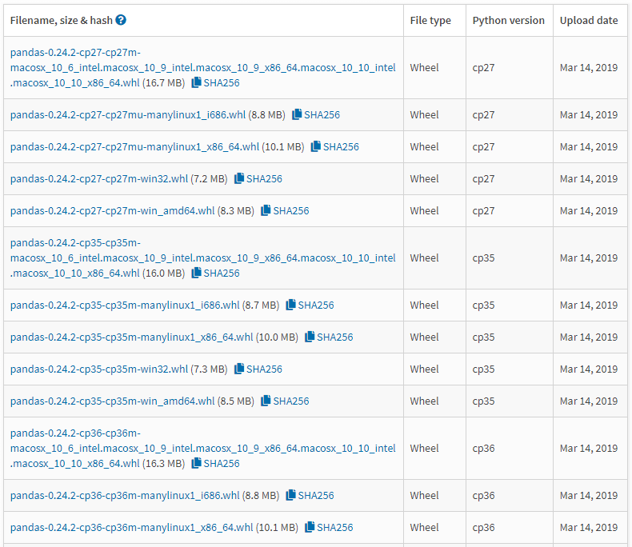

Python 模块管理总结
- 一般安装尝试步骤：pip -> easy_install - > setuptools
一、pip
四、参考
pip
- pip 提供安装、卸载和显示已安装列表等，而 easy_install 只提供安装
- pip 可通过 requirements.txt 集中管理依赖
- pip 可以安装二进制格式( .whl )
- pip 是先下载后安装，如果中途安装失败，也会清理干净，不会留下一个中间状态
- pip 能自动安装依赖
- 如果用户没有将软件打包上传到 pypi.python.org ，则无法使用 pip 进行安装，只能尝试使用源码安装
pip 安装
CentOS
# CentOS 6-
$ yum install -y epel-release #安装epel扩展
$ yum install -y python-setuptools
$ easy_install pip
# CentOS 7+
$ yum -y install epel-release
$ yum install python-pip
$ pip install --upgrade pip
Ubuntu
$ sudo apt install python3-pip
模块安装
在线终端安装模块
# 搜索 PyPI 是否存在 numpy
$ pip search numpy
# 搜索 numpy 的版本
$ pip install numpy==
# 安装
$ pip install numpy==1.17.3
离线安装模块 whl 包
1、安装 pip
2、下载模块 wheel 包(whl 包) - https://pypi.org

3、安装
$ pip install [路径]/xxx.whl
命令详解
- 命令格式：
pip command [options]
command
| 子命令 | 说明 |
|---|---|
| install、download、uninstall | 安装、下载、卸载安装包 |
| freeze | 以 requirements.txt 格式输出已安装包，在其他服务器上执行 pip install -r requirements.txt 直接安装 python 包 |
| list | 列出当前系统已安装的包 |
| show | 查看已安装的包的信息，包括版本、依赖、许可证、作者、主页等信息 |
| check | 检查包的依赖是否完整 |
| search | 查找安装包 |
| wheel | 打包安装包到 wheel 格式 |
| hash | 计算安装包的 hash 值 |
| completion | 生成命令不全配置 |
| debug | 显示 debug 信息 |
| help | 查看 pip 及其子命令的帮助文档 |
常用命令
pip -h- 查看 pip 帮助信息pip <command> -h- 查看pip command帮助文档pip search flask- 查找模块pip install flask==0.8- 安装特定版本的模块pip install [模块名] -d [路径]- 下载模块源码到指定目录但不安装pip install -d 路径 -r requirements.txt- 下载 requirements.txt 中模块但不安装，保存到指定路径pip install -r requirements.txt- 安装 requirements.txt 中模块pip install -U flask- 升级 flaskpip install -U pip- 升级 pippip uninstall flask- 删除已安装的模块pip uninstall -r requirements.txt- 删除 requirements.txt 中的模块pip freeze > [路径]/requirements.txt- 将系统已安装的模块列表写入 requirements.txt 文件pip list- 查看已安装的模块列表pip list -o- 查看可升级的模块列表pip check flask- 检查模块（flask）的依赖是否完整pip show -f flask- 显示模块 flask 所在目录pip completion --bash >> ~/.profile; source ~/.profile- 开启 pip 命令 tab 键自动补全~/.pip/pip.conf- 指定 pip 全局镜像源
扩展：配置 pip 国内镜像源
# 临时使用
$ pip install -i https://pypi.douban.com/simple/ flask
# 永久修改
# 创建 ~/.pip/pip.conf 并写入
$ cat ~/.pip/pip.conf
[global]
index-url = https://pypi.douban.com/simple/
# 命令行
$ pip config set global.index-url https://pypi.tuna.tsinghua.edu.cn/simple
easy_install
- easy_install 和 pip 都是用来下载安装 Python 一个公共资源库 PyPI 的相关资源包的，pip 是 easy_install 的改进版，提供更好的提示信 息，删除 package 等功能。老版本的 python 中只有 easy_install， 没有 pip
easy_install 安装
安装了 setuptools，easy_install 也就安装了
命令
setuptools
setuptools 安装
CentOS
# setuptools-24.0.3.tar.gz的下载地址：https://pypi.python.org/packages/84/24/610d8bb87219ed6d0928018b7b35ac6f6f6ef27a71ed6a2d0cfb68200f65/setuptools-24.0.3.tar.gz
$ tar zxvf setuptools-24.0.3.tar.gz
$ cd setuptools-24.0.3
$ python setup.py build
$ python setup.py install
Ubuntu
命令sudo apt-get install python-setuptools
模块安装
- 在 PyPI 或 Github 上下载以
.tar.gz或.zip格式的 Python 模块源码包 - 解压源码包并进入解压包目录(目录包含 setup.py 文件)
python setup.py build- 构建安装包到./build目录下python setup.py install安装
模块卸载
- 源码安装的 Python 模块，只需手动删除所有安装的模块即可，但问题往往是找不到安装了哪些模块
可以在安装时使用
python3 setup.py install --record log，这样 log 文件里就记录了安装的文件路径，需要卸载时，只需执行cat log ｜ xagrs rm -rf
常用命令
在包目录下执行
python setup.py -h- 查看帮助python setup.py install- 安装python setup.py build- 编译模块，生成文件放在./build/目录下python setup.py --url- 输出本模块的 urlpython setup.py sdist- 发布一个 python 模块，将其打包成 tar.gz 或者 zip 压缩包python setup.py bdist_rpm- 打包成 rpm 安装包python setup.py bdist_wininst- 打包成 exe 安装包